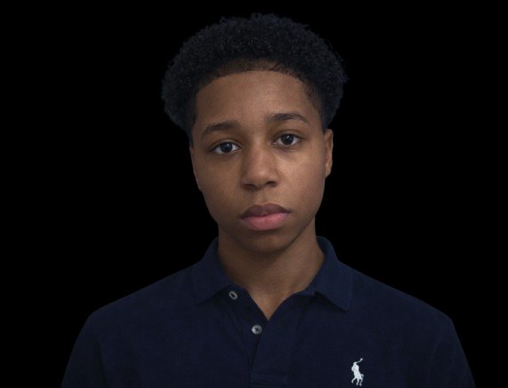

03 — Projects

01 — About Me
A creative software developer who enjoys building things that people can actually use.
I mainly work with HTML, CSS and JavaScript. Not every single day, but often enough to understand how things work and how to solve problems when they appear. I've also worked with React and Figma. I still have a lot to learn, but that's exactly what I like about this field.
Technology changes fast, and every company works with different tools and workflows. Instead of seeing that as a problem, I see it as something interesting. Give me the documentation and some time, and I'll figure it out.
During my internships at the Municipality of Delft and the Municipality of Rijswijk, I didn't just sit and watch. I was given the chance to work on real projects.
At the Municipality of Delft, I worked on a voting platform for young people. The idea was simple: create a website where young people could vote on local events created for them. I helped think about the project, designed the interface and built the website itself.
It wasn't always smooth. Sometimes things broke, sometimes I had to redo parts of the design or code. But that is also how I learned the most.
One moment that stood out for me was getting the opportunity to interview the mayor about the project. That was something I definitely didn't expect when starting the internship.
During another internship, I worked on a charging station application using low-code tools. The application is still live today and used in practice. Contributing to something that people actually use in the real world was a great experience.
I'm still learning and improving every day. I don't pretend to know everything, but I do take responsibility for the work I do. If something doesn't work, I keep trying until I find a solution. That mindset helped me a lot during my internships and while building my own projects.
Right now I'm looking for an internship where I can keep growing as a developer, work on real projects and learn from people with more experience.
If you're looking for someone who is motivated, curious and willing to put in the effort to improve, I would love to connect.
02 — Skills
These are the areas I spend most of my time improving in. Not just things I've tried once — real skills I use when building projects from start to finish.
Web development is where most of my time goes. I like building websites from the ground up using HTML, CSS and JavaScript, making sure everything is structured properly and easy to maintain.
I care a lot about writing clean code and building layouts that actually work across different screen sizes. Performance matters too — I like things to load fast and feel smooth.
I'm always experimenting with new ideas and components, but I never just copy things without understanding how they work. If something is in the code, there's a reason for it.
Before I start coding, I usually spend time designing and testing ideas. I mainly use Figma to explore layouts, create wireframes and prototype how a page should feel.
For me, design isn't just about making something look cool — it's about making it easy and natural for people to use. I try to keep interfaces clean, simple and intuitive.
Good design shouldn't confuse people. Ideally, everything should just make sense the moment you see it.
Over time I've built a workflow that helps me stay organised and keep improving. I use Git for version control, VS Code as my main development environment, and Node.js when I'm working with backend tools or scripts.
I also use AI sometimes when I'm stuck on a problem or want to explore different approaches faster. It doesn't do the work for me — it just helps me think through things and keep moving.
I enjoy learning new tools and figuring out how they fit into my workflow. If you give me documentation or a new stack, I'll usually dive in and start experimenting until I understand it.
03 — Projects
04 — Experience
04.5 — Why Me
I learned early on how to figure things out myself.
During both of my internships, there were moments where people intentionally stopped answering my questions. Not because they didn't want to help, but because they wanted me to learn how to solve problems on my own.
So I did. I research things, experiment, break stuff, fix it, and keep going until it works. That process taught me more than any tutorial ever could.
By now I'm comfortable jumping into new problems, learning what I need to learn, and delivering results without needing constant guidance.
I didn't just observe during my internships — I built things that were actually used.
At 15, I was already sitting in meetings with management and even the CEO, discussing projects and ideas. Instead of doing typical intern tasks, I helped build a platform where young people in Delft could vote on real local events.
At Delta-N, I also worked on an application that is still live today.
That experience showed me how development works outside of school: working with teams, real users, deadlines, and responsibility. It wasn't a demo project — it was something people actually used.
I've been curious about technology for as long as I can remember.
I started experimenting with coding when I was around eight years old. At the time I didn't fully understand what I was doing, but I kept trying, learning, and improving.
Over the years I've worked with technologies like HTML, CSS, JavaScript, React, TypeScript and Figma, and I'm always exploring new tools.
Every company uses a different stack, but learning new technologies quickly is something I'm very comfortable with.
For me, development isn't only about making something work — it should also look and feel right.
I pay attention to details in interfaces, layouts and interactions because they directly affect how people experience a product.
A good website or application should feel clear, intuitive and visually balanced. When design and development work together, the result is much stronger.
That's why I enjoy combining frontend development with UI/UX thinking.
This isn't just something I do for work — it's something I genuinely enjoy.
Before even starting my study, I already completed two internships and built my own portfolio. I often spend my free time experimenting with ideas, learning new tools or improving projects.
Technology moves fast, and that's part of what makes it exciting.
I'm not just looking for a job — I'm looking for opportunities to build things, learn from experienced people, and keep growing as a developer.
05 — Contact
Looking for a motivated developer who takes ownership from day one? I'd love to hear from you.